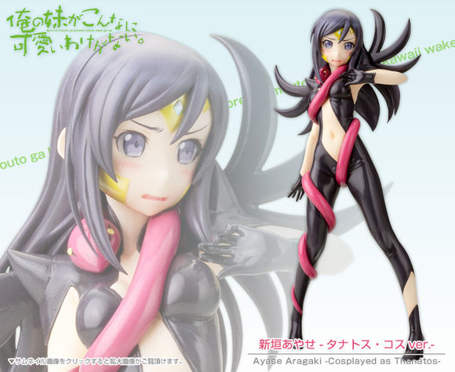

十五、被暗黑女巫拷起来的经验，一辈子也许只有一次
等等等等，怎么提到道歉一上来就要求下跪啊。
“但加奈子向绫濑的道歉的时候就是——”
“我明白了……你不用说了。”原来问题都出在我那妹妹身上，“姑且让绫濑向你低头道歉……怎么样？”
“真的？！”
听到加奈子如此雀跃的声音，我的视野突然变得有些模糊了，眼眶居然湿润了，可恶。
“真的，就算绫濑不愿意我也会按着她的头让她给你道歉的。”
“一言为定哦，这样的话即使暂时当不成模特好像也很划算啊。”
“不过不能为此故意放水——”
“知道知道，对加奈子来说那个死老太婆的道歉还没重要到要加奈子主动放弃模特出道的机会。”
“……”突然觉得绫濑对加奈子的残酷待遇都是她咎由自取，怪不了别人。
“加奈子。”
“嗯？”
“一定要赢啊……不，你一定能赢的，放轻松一些。”
“嗯……哦哦，哥哥的样子还是做给绫濑看吧，”加奈子似乎对我突然变得一本正经的声音有些不太习惯，不过她还是嘻嘻笑道，“总之加奈子一定赢给你看！”
+++++++++++++
收起手机，我来到绫濑的房间门前。
现在时间已经过了五点，老妈却还没回来，看来今天晚饭就我和绫濑两个了。
除了晚饭外，我还想向她确认下明天比赛的事情，毕竟我已经向加奈子夸下海口了，如果一旦出现万一，绫濑也有心里准备。
咚咚冬——吱——
绫濑似乎没锁上门，我敲门稍微用力了些，门当即就被敲开了一道大大的缝隙。
“诶？”
“啊？”
我和卧室里的绫濑视线相交，然后两人当即愣在了原地。
绫濑身上，没有穿衣服。
“……”不、不对，我揉了揉眼睛，又朝绫濑看去，衣服……确实有穿着，但那露出度实在太夸张了，那根本是不足以被称为衣服的东西，因为穿和没穿基本没什么区别——
绫濑她现在正弯腰背对着梳妆镜，我从镜子里看到她的一只手正掀起了大腿0根处的布料的小小一角，好像正在调整那里衣服的位置……如果那种布条真的能算衣服的话，而另一只手则环在胸前……总之就我个人……不，就男人而言算是十分煽情的，充满诱惑性和视觉冲击力的姿势。
“等——”此时绫濑似乎才刚刚回过神来，她张大了嘴巴，眼睛完全湿润了，“等、等下，别看这边！”
“没看没看，”我急忙摇着否认道，“才没看，绝对没看！”
“说、说谎，眼睛不是正一个劲的死盯着这边看吗？！”
我现在是这种德行吗？！
“总之你先把衣服换回来。”说着我立即要关上门——但绫濑的动作比我更快，只见她从枕头下边摸出来什么然后直直向了我冲了过来。
“等——”因为冲过来的绫濑的装束冲击力超乎寻常，我觉得自己的眼睛都快瞎了。
咔嚓
随着一串金属清脆的响声，手腕上多了一副明晃晃的手铐。
“……”我活动了下手腕——
哗啦
手铐的链子被绷得紧紧的，姑且算是控制住了我的双手。
“……”
“……”
“那个……绫濑？”
“……”绫濑没有搭话，我的妹妹只是以冰冷的视线看着我，以这身暗黑女巫——塔纳托斯.艾罗斯EX-Mode的姿态。
“总之……我还是先出去吧。”在气氛变得更糟之前我避开了绫濑的视线，打算立即从这个危险的空间离开。
“等等，七弦。”绫濑突然开口叫住我。
“想要说教的话等你先换好衣服再说吧，我会乖乖在外面等的。”总之现在先跟我离远一些，因为我的理性已经处在岌岌可危的边缘，我也不知道再这样下去自己还有没有可能不去做一些出格的事。
但绫濑下一句话就把我的好意击的粉碎。
“能帮我看一下吗？”
“看、看什么？”
“就……就是我穿这件Cos服装的感想……什么的？”
“……”一时间我甚至没能理解绫濑在说什么，我回过头看着妹妹，刚才冰封似的神色此刻已经缓和了下来，相反脸上更是浮起了明显的红晕。
给我等等。
“不……刚才你不是叫我不要看吗？”
“诶，啊……嗯。”绫濑犹豫了一会儿，答道，“因为你突然闯进来了啊，不管是谁都会吓一跳的吧，所以就下意识的......”
“是哦……”我叹了口气，看着铐住自己手腕的手铐，因为太过难为情于是下意识的把我铐起来了吗，到底要经过怎样的脑回路才能变成把人拷起来啊，虽然有很多事情想问，但想了想还是算了。
“而且，还是我正好在调整衣服的时候……”绫濑的语调变得有些高，我也不由的想起了刚才那极度煽情的一幕。
“……”
“……”
“在这以前，你先换件衣服吧？”我提议道。
“……好吧，”绫濑点了点头便向床边走去，似乎也没有把我赶出卧室的打算，正当我为要不要离开犹豫时，绫濑已经换起了衣服，只见她直接把制服套在了Cos服上面。
确实，塔纳托斯的服装布料少到和内衣没什么两样，再加上翅膀是可拆卸的，隐藏主体倒是挺简单的。
不到一分钟，新垣绫濑就从妖艳的暗黑女巫恢复成普通的清纯初中生形象，嗯……这样的变化反差确实很符合动画中反派的作风。
“别站在门口，先进来吧？”绫濑坐在桌前，边用手指梳理着头发边冲我说道。
我坐到了床沿的老位置上，然而绫濑现在似乎还没有替我打开手铐的打算。
“突然就闯进妹妹的卧室里来，如果只是小事的话我要告诉妈妈了哦？”
一上来就搬出了王牌啊，这个人。
“确实，没有事先确认状况是我的错，不过换衣服的话总该上锁吧？”谁能想到自己隔壁的妹妹正在换这种衣服啊。
“……”
“……绫濑？”
“忘记了……”
“哈啊？”
“因为是第一次穿这种衣服，再加上爸爸妈妈都不在家的关系……”
哥哥的话就没问题吗，你是不是压根就没把我放在眼里啊？
因为可能会得到很残酷的答案，我硬生生的把这个问题从嘴边憋了回去。
我和绫濑心照不宣的用三言两语将这个小小的事故跳过。然后我向妹妹确认了加奈子的顾虑。
“首先我已经说过了吧，”绫濑道，“加奈子不是御宅，桐乃是宅女的事实也要对她保密，也不能告诉她那件奖品是要送给桐乃的礼物，反正她也不是什么会为「无关痛痒」的友情去参加那种害臊的模仿秀的家伙，明刀明枪的来恐怕不行。”
“嗯，这点不能同意更多。”我补充道，“于是就用选美大会的名目把她带来，然后告诉她如果获胜了就推荐她去当模特……毕竟加奈子也很想做模特，这样一来正好一石二鸟。”
补充环节：
小说原作中绫濑Cos的塔纳托斯.艾罗斯EX-Mode的姿态
因尺度过大，动画版本中和谐过后的塔纳托斯.艾罗斯EX-Mode的姿态
